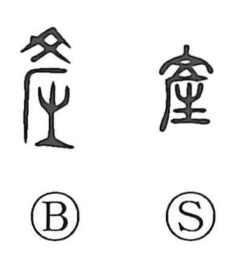

産

Uncategorized
Kun: umu, umareru, ubu | On: san
to give birth ・ to be born ・ to produce ・ production
Explanation
The original form is 產, combining 文 and 生 beneath a component shaped like a forehead (厂). Here 文 is the ritual tattoo or painted mark—drawn in red or black—while 生 evokes birth. The graph portrays the ceremony of marking a newborn’s brow, often with an X, to protect the child’s indwelling spirit and bar malign influences. Comparable customs were known in Japan, where an X or the character for “dog” (犬) was dabbed on a baby’s forehead with soot or crimson. From this image of a birth rite safeguarding the new life, the character came to mean “to give birth, to be born,” and by extension “to produce, to bring forth.”